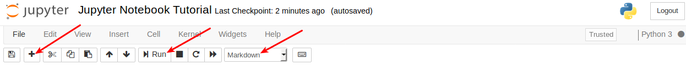

#hide
! [ -e /content ] && pip install -Uqq fastbook
import fastbook
fastbook.setup_book()Appendix: Jupyter Notebook 101
from fastbook import *[appendix] [role=“Jupyter notebook 101”]
You can read this tutorial in the book, but we strongly suggest reading it in a (yes, you guessed it) Jupyter Notebook. This way, you will be able to actually try the different commands we will introduce here. If you followed one of our tutorials in the previous section, you should have been left in the course folder. Just click on nbs then dl1 and you should find the tutorial named 00_notebook_tutorial. Click on it to open a new tab and you’ll be ready to go.
If you are on your personal machine, clone the course repository and navigate inside before following the same steps.
Introduction
Let’s build up from the basics: what is a Jupyter Notebook? Well, we wrote this book using Jupyter Notebooks. A notebook is a document made of cells. You can write in some of them (markdown cells) or you can perform calculations in Python (code cells) and run them like this:
1+12Cool, huh? This combination of prose and code makes Jupyter Notebook ideal for experimentation: we can see the rationale for each experiment, the code, and the results in one comprehensive document.
Other renowned institutions in academia and industry use Jupyter Notebook, including Google, Microsoft, IBM, Bloomberg, Berkeley and NASA among others. Even Nobel-winning economists use Jupyter Notebooks for their experiments and some suggest that Jupyter Notebooks will be the new format for research papers.
Writing
A type of cell in which you can write text is called a Markdown cell. Markdown is a very popular markup language. To specify that a cell is Markdown you need to click in the drop-down menu in the toolbar and select Markdown.
Click on the the ‘+’ button on the left and select Markdown from the toolbar. Now you can type your first Markdown cell. Write ‘My first markdown cell’ and press run.

You should see something like this:
My first markdown cell
Now try making your first Code cell: follow the same steps as before but don’t change the cell type (when you add a cell its default type is Code). Type something like 3/2. You should see ‘1.5’ as output.
3/21.5Modes
If you made a mistake in your Markdown cell and you have already run it, you will notice that you cannot edit it just by clicking on it. This is because you are in Command Mode. Jupyter Notebooks have two distinct modes:
Edit Mode:: Allows you to edit a cell’s content.
Command Mode:: Allows you to edit the notebook as a whole and use keyboard shortcuts but not edit a cell’s content.
You can toggle between these two by either pressing ESC and Enter or clicking outside a cell or inside it (you need to double click if it’s a Markdown cell). You can always tell which mode you’re on: the current cell will have a green border in Edit Mode and a blue border in Command Mode. Try it!
Other Important Considerations
Your notebook is autosaved every 120 seconds. If you want to manually save it you can just press the save button on the upper left corner or press s in Command Mode.

To know if your kernel (the Python engine executing your instructions behind the scenes) is computing or not, you can check the dot in your upper right corner. If the dot is full, it means that the kernel is working. If not, it is idle. You can place the mouse on it and the state of the kernel will be displayed.

There are a couple of shortcuts you must know about which we use all the time (always in Command Mode). These are:
Shift+Enter:: Run the code or markdown on a cell
Up Arrow+Down Arrow:: Toggle across cells
b:: Create new cell
0+0:: Reset Kernel
You can find more shortcuts by typing h (for help).
You may need to use a terminal in a Jupyter Notebook environment (for example to git pull on a repository). That is very easy to do: just press ‘New’ in your Home directory and ‘Terminal’. Don’t know how to use the Terminal? We made a tutorial for that as well. You can find it here.

That’s it. This is all you need to know to use Jupyter Notebooks. That said, we have more tips and tricks below, so don’t jump to the next section just yet.
Markdown Formatting
Italics, Bold, Strikethrough, Inline, Blockquotes and Links
The five most important concepts to format your code appropriately when using Markdown are:
Italics:: Surround your text with _ or *.
Bold:: Surround your text with __ or **.
inline:: Surround your text with `.blockquote:: Place > before your text.
Links:: Surround the text you want to link with [] and place the link adjacent to the text, surrounded with ().
Headings
Notice that including a hashtag before the text in a markdown cell makes the text a heading. The number of hashtags you include will determine the priority of the header (# is level one, ## is level two, ### is level three and #### is level four). We will add three new cells with the + button on the left to see how every level of heading looks.
In the notebook, double click on some headings and find out what level they are!
Lists
There are three types of lists in markdown.
Ordered list:
- Step 1
- Step 1B
- Step 3
Unordered list
- learning rate
- cycle length
- weight decay
Task list
In the notebook, double click on them to see how they are built!
Code Capabilities
Code cells are different than Markdown cells in that they have an output cell. This means that we can keep the results of our code within the notebook and share them. Let’s say we want to show a graph that explains the result of an experiment. We can just run the necessary cells and save the notebook. The output will be there when we open it again! Try it out by running the next four cells.
# Import necessary libraries
from fastai.vision.all import *
import matplotlib.pyplot as pltfrom PIL import Imagea = 1
b = a + 1
c = b + a + 1
d = c + b + a + 1
a, b, c ,d(1, 2, 4, 8)plt.plot([a,b,c,d])
plt.show()We can also print images while experimenting.
Image.open(image_cat())Running the App Locally
You may be running Jupyter Notebook from an interactive coding environment like Gradient, Sagemaker or Salamander. You can also run a Jupyter Notebook server from your local computer. What’s more, if you have installed Anaconda you don’t even need to install Jupyter (if not, just pip install jupyter).
You just need to run jupyter notebook in your terminal. Remember to run it from a folder that contains all the folders/files you will want to access. You will be able to open, view, and edit files located within the directory in which you run this command but not files in parent directories.
If a browser tab does not open automatically once you run the command, you should CTRL+CLICK the link starting with ‘http://localhost:’ and this will open a new tab in your default browser.
Creating a Notebook
Now that you have your own Jupyter Notebook server running, you will probably want to write your own notebook. Click on ‘New’ in the upper left corner and ‘Python 3’ in the drop-down list (we are going to use a Python kernel for all our experiments).

Shortcuts and Tricks
Here is a list of useful tricks when in a Jupyter Notebook. Make sure you learn them early and use them as often as you can!
Command Mode Shortcuts
There are a couple of useful keyboard shortcuts in Command Mode that you can leverage to make Jupyter Notebook faster to use. Remember that you can switch back and forth between Command Mode and Edit Mode with Esc and Enter.
- m:: Convert cell to Markdown
- y:: Convert cell to Code
- d+d:: Delete cell
- o:: Toggle between hide or show output
- Shift+Arrow up/Arrow down:: Select multiple cells. Once you have selected them you can operate on them like a batch (run, copy, paste etc).
- Shift+M:: Merge selected cells
Cell Tricks
There are also some tricks that you can code into a cell:
?function-name:: Shows the definition and docstring for that function??function-name:: Shows the source code for that functiondoc(function-name):: Shows the definition, docstring and links to the documentation of the function (only works with fastai library imported)- Shift+Tab (press once):: See which parameters to pass to a function
- Shift+Tab (press three times):: Get additional information on the method
Line Magics
Line magics are functions that you can run on cells. They should be at the beginning of a line and take as an argument the rest of the line from where they are called. You call them by placing a ‘%’ sign before the command. The most useful ones are:
%matplotlib inline:: Ensures that all matplotlib plots will be plotted in the output cell within the notebook and will be kept in the notebook when saved.
This command is always called together at the beginning of every notebook of the fast.ai course.
%matplotlib inline%timeit:: Runs a line ten thousand times and displays the average time it took to run.
%timeit [i+1 for i in range(1000)]56.1 µs ± 592 ns per loop (mean ± std. dev. of 7 runs, 10000 loops each)%debug: Inspects a function which is showing an error using the Python debugger. If you type this in a cell just after an error, you will be directed to a console where you can inspect the values of all the variables.